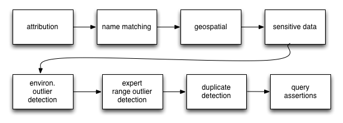
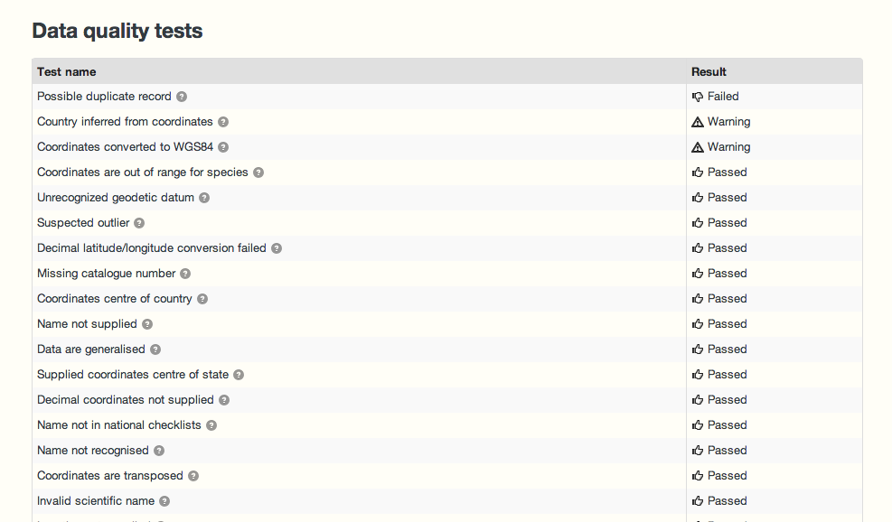
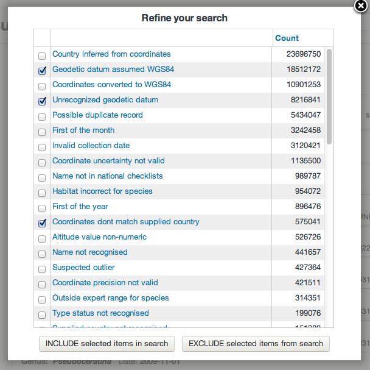
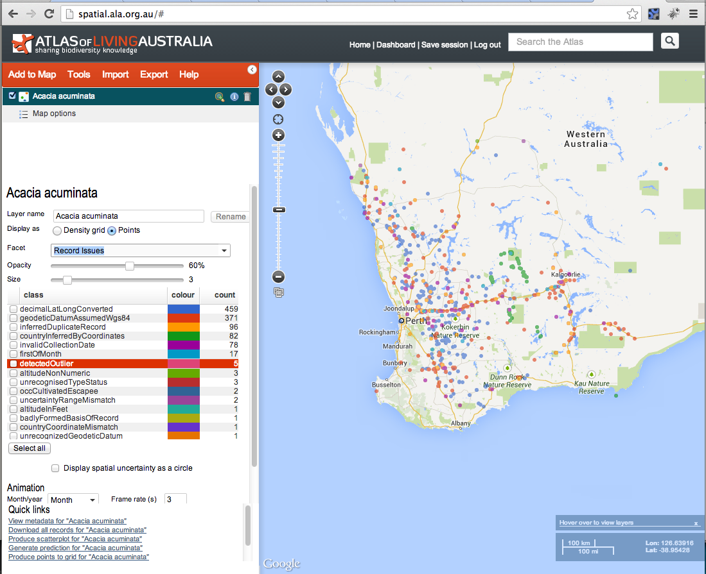
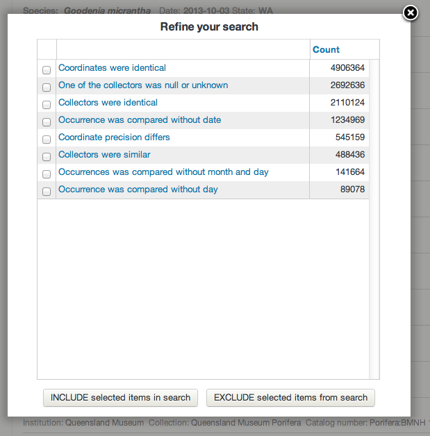
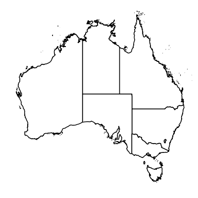
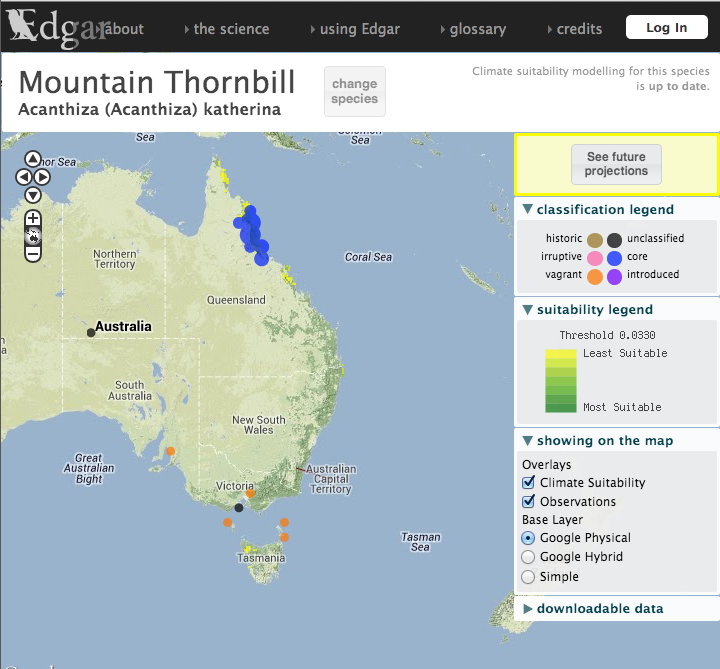
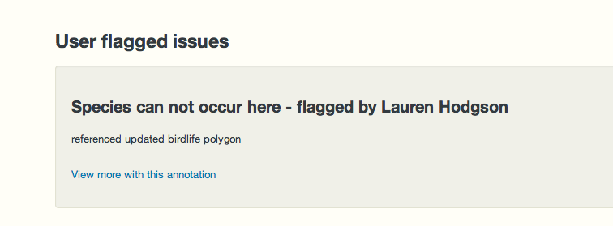

We are regularly asked about how we process and manage data. This blog provides a reasonably technical overview of:
- some of the processes occurrence data goes through;
- how the results of this processing are visible to users; and
- how users can explore and filter data to be “fit for purpose”
Note that these processes continue to evolve over time to better detect issues and address your needs so your feedback is welcome.
General approach
Our philosophy is to:
- Preserve the original data as provided by the data provider
- Interpret the data in terms of taxonomy provided by National Species Lists, geospatial information and attribution.
- Assert additional information about the data based on a range of tests. These assertions are designed to help Atlas’ users make clear decisions about data use.
In this approach, the Atlas does not make an overall assertion about the quality of data. This is based upon the premise that we do not know (or need to know) the purpose to which data will be put. In other words each user’s fitness-for-purpose scenario is different - so we put as much information in the hands of the user as possible to help you make this call.
To take this point further - some data may be unusable to some users in some circumstances, but will still be valuable in other contexts. With this in mind, the Atlas will never restrict data from a search based on the results of the data processing, but will expose the results and allow users to filter certain data in or out of display and later analyses.

Simple diagram of some of the processes run over occurrence data
Assertions
As data is processed and ingested into the Atlas, a large number of tests are run against the data. These result in assertions about the content and quality of the data. All the assertion types and descriptions of the tests are outlined in this spreadsheet.

Data quality summary displayed on record page
The results of the tests and assertions are visible on a record page and can also be used in searches as well as including or excluding records from display or analyses - as per the following screenshots:

Listing of tests run on a record page

The "record issues" facet which can be used to include/exclude records with specific assertions

Mapping of Acacia acuminata with the record issues facet selected. The occurrence points are coloured by issues detected with the records. Within the spatial portal, users can select records with/without issues and produce a layer from this selection
Taxonomy
The taxonomy provided with the original occurrence record can vary from a scientific name to a classification from subspecies to kingdom. Scientific names are parsed using the useful java GBIF ECAT name parser library developed by GBIF. This code extracts the key components of the name (generic, specific epithet, authorship etc) taking into account the nomenclatural rules (botanical and zoological) for scientific names. The Atlas extends the GBIF ECAT Name parser to handle Phrase Names as defined in the National Species List (NSL). The NSL includes the Australian Faunal Directory (AFD), the Australian Plant Name Index (APNI) and the Australian Plant Census. The classification is matched to taxa in the NSL.
The type of the name matching is classified into one of the categories on the left (as of 4/10/2013).

Name matching metrics can be used to select records matched in a certain way.

Taxonomic name issues can be used to include/exclude records that may have issues such as being associated with a misapplied name
Taxonomic name issues that are flagged include:
- Parent concept is synonym of child: Arises when a species is divided into 1 or more subspecies and the species name is marked as a synonym to one of the subspecies.
- Match to misapplied name: A warning to indicate that the supplied scientific name has been misapplied in the past.
- Matched to homonym: During the match a homonym was detected. This will often cause the match to be applied at a higher level in the classification.
- Affinity species: The supplied scientific name included an aff. marker.
- Confer species: The supplied scientific name included a cf. marker.
- Associated name excluded: The scientific name is both an accepted name and excluded from another name.
- Matched to excluded species: The scientific name matched to a species that is considered excluded from Australia.
- Species plural: The scientific name was supplied with an spp. marker.
Further information about the Name Matching algorithms used by the ALA can be found in the ALA Names List wiki.
Duplicate detection
Detecting for duplicate occurrence records is one of the tests performed during data processing. If a potential duplicate is detected, the record is flagged which then allows users to optionally discard duplicates records from searches, analysis and mapping. A discussion by Simon Bennett on duplicate records is available here. Duplicates may occur in observational data due to historical data merging between datasets. For specimen data, “duplicate” may be inaccurate as there may be multiple specimens taken from the same individual or multiple specimens taken as part of the same collection event.
The Atlas uses the scientific name, decimal latitude, decimal longitude, collector and collection date to detect potential duplicate records. Here are some additional implementation details:
- Records are grouped at a species level. Synonyms are mapped to the accepted name, and the accepted name is used in this grouping.
- Collection dates are duplicates where year, month and day are identical. Paired empty values are considered identical.
- Collector names are compared; if one is null it is considered a duplicate, otherwise a Levenstein distance is calculated with an acceptable threshold indicating a duplicate
- Latitudes and Longitudes are duplicates when they are identical at the same precision. Null values are excluded from consideration.
When a group of duplicate records are identified, one record is identified as the “representative” of the duplicates. The representative record is the one that is the most complete in terms of geospatial information and other metadata.
The duplicate detection process is run as a batch job across all data each week.

Duplicate detection status values from the facet. Users can use this facet to select records marked as duplicates by the criteria used to associate the records.
Here is an example record that has been marked as a duplicate. In this particular case the specimens were possibly collected as part of the same collection event.

Associated record details for PERTH 8480311
Expert distribution outlier
As part of the work on fishmap, the Atlas worked with CSIRO CMAR to expose fish distributions. These distributions are represented as polygons where each species is believed to occur. Each distribution has been developed by an expert in the taxonomic group.
A similar suite of expert distributions has been developed for birds by BirdLife international. Both sets of distributions are used to add assertions to occurrence records that fall outside these polygons. As with many assertions, just because an assertion is made, does not necessarily mean that the record is an ‘error’. For example, in the case of these expert distributions, a new observation may extend the species range.

Reticulate Butterflyfish. Image by: J.E. Randall. Australian National Fish Collection Images. Licence: CC BY-NC 3.0

Distribution map for Reticulate Butterflyfish as supplied by CSIRO CMAR
The expert range and the occurrence record location are displayed on the record page:

Record outside of expert distribution area
We hope to add expert ranges for other groups as they become available. This process is run across all data each week.
Environmental outlier detection

Mountain thornbill. Image by: Tom Tarrant. Licence: http://creativecommons.org/licenses/by-nc-sa/2.0/
Environmental outlier’ detection is run across all occurrence data that has been classified to species level. In this case ‘Environmental outlier’ means that an occurrence record lies outside one or more of the expected environmental ranges of the species. This check intersects all point locations for each species with 5 selected environmental surfaces, and then runs an algorithm known as Reverse JackKnife See here for details.
The 5 selected environmental layers were selected because, as a group, they account for most of the terrestrial environment of Australia at a 1km resolution. It is recognized that these 5 layers may not cover the significant environmental determinants of all terrestrial species, or at different scales, but it is a start. With marine species, the environmental layers are less well developed, but watch this space.
For more information about the selection of the environmental layers see Williams, K.J. and Belbin, L. and Austin, M.P. and Stein, J.L. and Ferrier, S., (2012). “Which environmental variables should I use in my biodiversity model?”, International Journal of Geographical Information Science, vol. 26, no. 11, pp. 2009-2047. DOI: 10.1080/13658816.2012.698015, http://www.scopus.com/inward/record.url?eid=2-s2.0-84867849849&partnerID=MN8TOARS
This process is run across all species each week.

Mountain thornbill records in the spatial portal
Below is a display taken from an occurrence record that has been marked as a potential environmental outlier against 3 of the 5 environments.
Records in blue are not considered outliers. The records in red are considered potential outliers for this environmental surface. The actual record being viewed is considered a potential outlier against this environment and is coloured yellow.

Record considered an environmental outlier for 3 surfaces
Query assertions (new!)
As part of the Australian National Data Service (ANDS) funded collaboration with Centre for Tropical Biodiversity & Climate Change and the eResearch Centre, James Cook University, the Atlas now supports what we are calling “query assertions”. These are pre-defined queries (based on, say - “this species in this location at this time”) that dynamically flags records if they match the query. For example, a query could be “all records for the Atlas Nematode (fictitious) in the Condamine Alliance NRM (or any polygon) with the date range of 1970 to 1980” can be flagged as for example, “introduced” or another criteria.
This gives expert users a quick way of flagging issues against a large number of records. This type of assertion also differs from ad-hoc annotations provided for a single record (see “Flag an issue” on a record page) in that they are applied to all new data that matches an existing query assertion as it is loaded into the Atlas.
There are blog articles on the development activities for the project here and here.

Mountain thornbill records as display in the JCU edgar portal
A listing of records that have been so marked with query assertions is available here. An example record that has been marked in this way is here. The annotation also has a link to other records that have been marked with this assertion. Here is an example set of record marked with a single assertion listing.

A record marked with query assertion
This process is run weekly across all data. Note: There isn’t currently a user interface in the Atlas (web services must be used) for adding this type of assertion but we hope to add this in the near future.
Spatial validity
Records are marked as spatially suspect if they fail one or more of a subset of the spatial tests. As with other tests, users may include/exclude data with specific spatial assertions. All tests are outlined in this spreadsheet.
Examples of issues that will cause a record to be marked as suspect include:
- Coordinates given as 0,0. Typically a result of bad default values for empty database fields.
- Coordinates out of range (Latitude >90 or <-90 and Longitude >180 or <-180).
- Marine species on land or vice-versa.
- Supplied coordinates are the centre of a country.
- The coordinates given are in the centre of a State or Territory. suggesting they have been generated post collection event, erroneously by software .
- Records marked as geospatially suspect by users.
- Environmental outliers.
- Expert distribution outliers.
Automated Tests and Human annotations
The suite of Atlas tests cannot identify all errors. For example, a record may contain a valid scientific name but it may have been misnamed at the time of observation or subsequently. If the misnamed species occurs in the same environmental or spatial conditions, it is unlikely to be automatically detected, unless other tests flag an issue. Such a naming error may be detected for example, by a taxonomist who recognizes the record and knows about the corresponding museum specimen or a history of misnaming.
There are four possible combinations of detecting and correcting errors by automated tests and by people. Automated tests may be able to both detect and correct a range of errors as noted above. In some cases, automated tests can detect errors but cannot correct them. For example, a record may be flagged as being a genuine environmental outlier but how does one correct the location of the observation?
In summary, the automatic tests with the Atlas of Living Australia are very necessary but insufficient. Human intervention is required to design the tests and evaluate the results. In many cases, human intervention is required to detect and correct errors that the automatic tests cannot: See http://www.pensoft.net/journals/zookeys/article/5438/a-specialist%E2%80%99s-audit-of-aggregated-occurrence-records-an-%E2%80%98aggregator%E2%80%99s%E2%80%99-perspective
The Atlas therefore values all annotations to records when potential issues are detected by users. The Atlas is looking into methods that will support the bulk import of record annotations where an external analysis has been performed by taxonomic/domain experts.
The Sandbox
You can run the Atlas tests against you data by uploading it to the Atlas’ sandbox tool. Note: The uploaded data is removed from the Atlas periodically. The tests run in the sandbox do not currently include duplicate detection, environmental outlier detection or expert distribution outlier detection - but this is another area are working on at the moment.

{kind=link}
{kind=link}
{kind=link}
{kind=link}
{kind=link}
{kind=link}